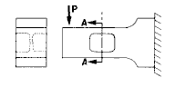
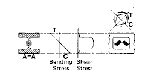
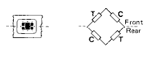
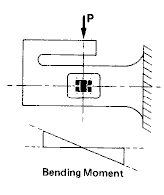
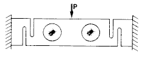
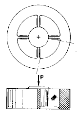
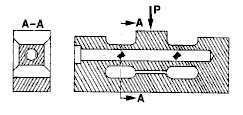

Strain Gage Based Transducers reference
The principle of the shear-web spring element is illustrated in Figs. A-C. In this case, it takes the form of a cantilever beam which has been designed with a generous cross section (with respect to the rated load) to minimize the deflection. Under these conditions, the surface strain along the top and bottom of the beam would be too low to produce the 2 mV/V output normally expected of a strain gage transducer. At section A-A of the beam, however, a recess has been machined in each side, leaving a relatively thin web in the center. Just as in a structural I-beam, most of the shear force imposed by the load is carried by the web, while the bending moment is resisted primarily by the flanges.

Fig. A
The cross section A-A of the beam in Fig. A is shown in Fig. B, along with the shear and bending stress distributions on this section. At the neutral axis, where the bending stress is zero, the state of stress on the web is one of pure shear, acting in the vertical and horizontal directions. As a result, the principal axes there are at ±45 deg to the longitudinal axis of the beam, and the corresponding principal strains are of equal magnitude and opposite sign. Pairs of strain gages, with their gridlines oriented along the principal axes, are installed on both sides of the web and connected in a full-bridge circuit for load measurement.

Fig. B
One of the advantages of the shear-web spring elements is its low sensitivity to variations in the point of load application. Static equilibrium considerations decree that the vertical shear force on every section of the beam to the right of the load (in Fig. A) be the same, and exactly equal to the applied load. Thus, the shear in the web should be independent of the point of load application (along the beam centerline), as long as the load is applied to the left of the web. If the strain gages sensed only the shear-induced strains, the bridge output would be unaffected by the position of the load or by other bending moments in the vertical plane.
Since the gage grids are necessarily finite in length, however, and thus span a small distance above and below the neutral axis as indicated in Fig. B, their outputs are also slightly affected by the bending strains in the web. With the grids centered on the neutral axis, the tensile and compressive bending strains above and below the axis tend to be self-cancelling in each grid. But the cancellation is usually less than perfect because of small asymmetries in the spring element and strain gage installation.
An alternative gage arrangement is shown in Fig. C. If the gridline directions on the back face of the web are made perpendicular to those on the front face, and if the gages are connected in the bridge circuit as indicated, bending effects are cancelled in the bridge. With this arrangement, the bridge output is theoretically independent of the bending moment, and thus of the load placement. The same arrangement serves to cancel any bending strains which may occur due to side loads on the beam.

Fig. C
Because of higher-order effects tending to couple the shear and bending strains, it is always preferable to design the beam for the lowest practicable bending moment in the shear web. This would seem to suggest the use of very short beams; but the point of load application must be far enough away from the shear web (a la St. Venant's principle) so that the web behavior approximates the ideal described here. One way to minimize the bending moment in the shear web is indicated schematically in Fig. D. In this case, the bending moment at the center of the web is zero; and, for a given beam length and rated capacity, the bending moment throughout the beam is halved.

Fig. D
Shear-web spring elements are not limited, of course, to cantilever-beam configurations; and a variety of other designs can be found in commercial load cells. Figure E, for example, illustrates what is effectively a simply supported beam, because of the flexures at both ends. In this design, four gages, one on each side of each web, make up the full-bridge circuit. The gage placement and circuit arrangement provide cancellation of bending strains due to either off-axis loads or side loads.

Fig. E
Another type of shear-web spring element is shown in Fig. F. In this and similar designs, the element consists of a metal block in which holes or slots have been machined to form webs subject to direct shear under axial load.

Fig. F
A further and final example is given in Fig. G where the shear webs are produced by drilling a hole longitudinally through the beam. Strain gages oriented at ±45 degrees to the beam axis are then installed inside the hole to sense the shear force (see U.S. Patent No. 4,283,941).

Fig. G
In addition to their characteristically low sensitivities to misaligned load vectors, shear-web spring elements offer several other advantages to the load cell designer. Usually, for instance, they can be made very low in overall height for a given load capacity. Furthermore, the strain gages are commonly located in some form of recess where, even though more difficult to install, they can readily be sealed and protected from environmental effects. These features, along with low compliance and good linearity undoubtedly account for the growing popularity of shear-web spring elements for higher capacity load cells. They are not, however, well adapted to very low capacity applications. This limitation occurs because a web which is thin enough to produce the required output strain under rated load is apt to be too thin for elastic stability.